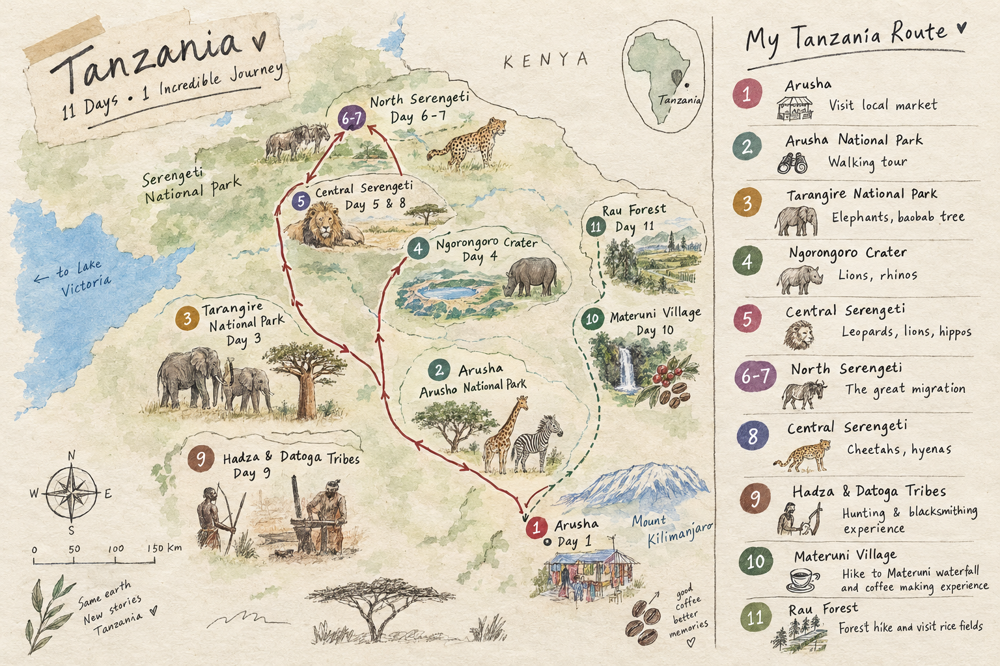

11 days • 1 incredible journey
My Tanzania
Travel Scrapbook
A little collection of places, wildlife, people and moments from my journey through northern Tanzania.

Tap a day on the map to open its story ✦
11 days • 1 incredible journey
A little collection of places, wildlife, people and moments from my journey through northern Tanzania.
